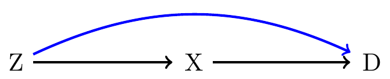

Bias Analysis
EPIB 705
Sam Harper
2023-03-22
Overview
Why Bias Analysis?
Deterministic Bias Analysis
Unmeasured confounding
Misclassification
Selection bias
Multidimensional Bias Analysis
Record-level Implementation
Summary
Overview
Why Bias Analysis?
Deterministic Bias Analysis
Unmeasured confounding
Misclassification
Selection bias
Multidimensional Bias Analysis
Record-level Implementation
Summary
Introduction
How do misclassification, selection bias, and unmeasured confounding create bias in parameter estimation?
By assuming that all errors are random and that any modeling assumptions (such as homogeneity) are correct, all uncertainty about the effect of errors on estimates is subsumed within conventional standard deviations for the estimates (standard errors), such as those given in earlier chapters (which assume no measurement error), and any discrepancy between an observed association and the target effect may be attributed to chance alone1
- Bias analysis is an attempt to quantify the potential for bias, and reduce the likelihood of mistakenly attributing effects to exposure rather than systematic error.
What are we concerned about?
In theory.
What are we concerned about?
In practice.
Potential consequences
- “Bias analysis requires educated guesses about the likely sizes of systematic errors”1
- The difficulty is that it is challenging to do so quantitatively, thus investigators often rely on qualitative judgments about the likelihood that their estimates are biased.
- A basic problem is that the results of observational studies are likely to be sensitive to choices made by the analyst.
Example of typical qualitative analysis
Study1 assessing the association of vitamin D on age-related macular degeneration (AMD):
Several potential limitations of the present investigation must be considered in drawing conclusions from the results. In particular, AMD was ascertained only in one eye, resulting in a possible underestimation of AMD cases; however, studies have shown that AMD development is typically symmetric. Further, AMD was identified using nonmydriatic fundus photography without dilating the pupils, which may have led to potential misclassification of cases. In estimating milk and fish intake, the food frequency questionnaire used in this study was not validated and the measurement error was unknown. The serum 25-hydroxyvitamin D values would reflect sun exposure and food intake over recent weeks, rather than years, which would have enhanced random measurement error. Therefore, associations reported are likely to be biased toward the null.
Which red line is longer?1
Intuitions are difficult to overcome.1
Overview
Why Bias Analysis?
Deterministic Bias Analysis
Unmeasured confounding
Measurement error
Selection bias
Multidimensional Bias Analysis
Record-level Implementation
Summary
Rationale for bias analysis for unmeasured confounding
When should you conduct a bias analysis for unmeasured confounding?
An important (and well known) confounder was not measured (e.g., too expensive to collect; reliance on secondary data)
Quantifying the impact of an unknown confounder (e.g., early study of an association; unmeasured confounding seems likely)
Goals:
We want to provide an estimate of the association corrected for the unmeasured confounder (\(Z\)).
Answers the question of what the association would have been had we controlled for \(Z\).
Where did this come from?
- Early ideas formulated in the context of controversy surrounding the link between smoking and lung cancer1
If a causal agent, A, with no causal effect upon the risk of a disease, nevertheless, because of a positive correlation with some other causal agent, B, shows an apparent risk, r, for those exposed to A, relative to those not so exposed, then the prevalence of B, among those exposed to A, relative to the prevalence among those not so exposed, must be greater than r.
Unmeasured Confounding
- Suppose we want to assess the effect of occupational exposure to resins (\(X\)) on lung cancer risk (\(D\)) using a case-control design.1
| Disease Status | X=1 | X=0 | Total |
|---|---|---|---|
| Cases (D=1) | 45 | 94 | 139 |
| Controls (D=0) | 257 | 945 | 1202 |
| Total | 302 | 1039 | 1341 |
Crude OR:
\(OR_{DX+}=\frac{(45\times945)}{(94\times257)}=1.76\)
Likely confounded by smoking \((Z)\), but we did not measure it.
How can we quantify failing to adjust for \(Z\)?
Data Layout for Dichotomous Unmeasured Confounder
| Z=1 Smokers | Z=0 Non-smokers | Total | |||||||||
|---|---|---|---|---|---|---|---|---|---|---|---|
| X=1 | X=0 | Total | X=1 | X=0 | Total | X=1 | X=0 | Total | |||
| D=1 | \({\scriptstyle A_{11}}\) | \({\scriptstyle A_{01}}\) | \({\scriptstyle M_{11}}\) | \({\scriptstyle A_{1+}-A_{11}}\) | \({\scriptstyle A_{0+}-A_{01}}\) | \({\scriptstyle M_{A+}-M_{11}}\) | \({\scriptstyle A_{1+}}\) | \({\scriptstyle A_{0+}}\) | \({\scriptstyle M_{A+}}\) | ||
| D=0 | \({\scriptstyle B_{11}}\) | \({\scriptstyle B_{01}}\) | \({\scriptstyle M_{01}}\) | \({\scriptstyle B_{1+}-B_{11}}\) | \({\scriptstyle B_{0+}-B_{01}}\) | \({\scriptstyle M_{B+}-M_{01}}\) | \({\scriptstyle B_{1+}}\) | \({\scriptstyle B_{0+}}\) | \({\scriptstyle M_{B+}}\) | ||
| Total | \({\scriptstyle N_{11}}\) | \({\scriptstyle N_{01}}\) | \({\scriptstyle N_{+1}}\) | \({\scriptstyle N_{1+}-N_{11}}\) | \({\scriptstyle N_{0+}-N_{01}}\) | \({\scriptstyle N_{++}-N_{+1}}\) | \({\scriptstyle N_{1+}}\) | \({\scriptstyle N_{0+}}\) | \({\scriptstyle N_{++}}\) | ||
- The crude odds ratio is \(OR_{DX+}=A_{1+}B_{0+}/A_{0+}B_{1+}\), but to adjust for smoking we need smoking stratum-specific ORs.
- We can write the exposure-disease OR within strata of \(Z\) \((OR_{DXZ})\) as:
\(OR_{DX1}=\dfrac{A_{11}B_{01}}{A_{01}B_{11}}\quad \text{and} \quad OR_{DX0}=\dfrac{\left(A_{1+}-A_{11}\right)\left(B_{0+}-B_{01}\right)}{\left(A_{0+}-A_{01}\right)\left(B_{1+}-B_{11}\right)}\)
Data Layout for Dichotomous Unmeasured Confounder
We already know the marginal totals, so only 4 quantities to estimate.
| Z=1 Smokers | Z=0 Non-smokers | Total | |||||||||
|---|---|---|---|---|---|---|---|---|---|---|---|
| X=1 | X=0 | Total | X=1 | X=0 | Total | X=1 | X=0 | Total | |||
| D=1 | \(\mathbf{{\scriptstyle A_{11}}}\) | \(\mathbf{{\scriptstyle A_{01}}}\) | \({\scriptstyle M_{11}}\) | \({\scriptstyle 45-A_{11}}\) | \({\scriptstyle 94-A_{01}}\) | \({\scriptstyle 139-M_{11}}\) | 45 | 94 | 139 | ||
| D=0 | \(\mathbf{{\scriptstyle B_{11}}}\) | \(\mathbf{{\scriptstyle B_{01}}}\) | \({\scriptstyle M_{01}}\) | \({\scriptstyle 257-B_{11}}\) | \({\scriptstyle 945-B_{01}}\) | \({\scriptstyle 1202-M_{01}}\) | 257 | 945 | 1202 | ||
| Total | \({\scriptstyle N_{11}}\) | \({\scriptstyle N_{01}}\) | \({\scriptstyle N_{+1}}\) | \({\scriptstyle 302-N_{11}}\) | \({\scriptstyle 1039-N_{01}}\) | \({\scriptstyle 1341-N_{+1}}\) | 302 | 1039 | 1341 | ||
These values may be generated by specifying values for the prevalence of smoking in each exposure group and the association between smoking and disease.
The (unknown) smoking prevalence in exposure strata are:
\[P_{Z1}=N_{11}/N_{1+}\quad \text{and} \quad P_{Z0}=N_{01}/N_{0+}\]
What do we need? (1) Distribution of \(Z\) by exposure
| Z=1 Smokers | Z=0 Non-smokers | Total | |||||||||
|---|---|---|---|---|---|---|---|---|---|---|---|
| X=1 | X=0 | Total | X=1 | X=0 | Total | X=1 | X=0 | Total | |||
| D=1 | \(\mathbf{{\scriptstyle A_{11}}}\) | \(\mathbf{{\scriptstyle A_{01}}}\) | \({\scriptstyle M_{11}}\) | \({\scriptstyle 45-A_{11}}\) | \({\scriptstyle 94-A_{01}}\) | \({\scriptstyle 139-M_{11}}\) | 45 | 94 | 139 | ||
| D=0 | \(\mathbf{{\scriptstyle B_{11}}}\) | \(\mathbf{{\scriptstyle B_{01}}}\) | \({\scriptstyle M_{01}}\) | \({\scriptstyle 257-B_{11}}\) | \({\scriptstyle 945-B_{01}}\) | \({\scriptstyle 1202-M_{01}}\) | 257 | 945 | 1202 | ||
| Total | \({\scriptstyle N_{11}}\) | \({\scriptstyle N_{01}}\) | \({\scriptstyle N_{+1}}\) | \({\scriptstyle 302-N_{11}}\) | \({\scriptstyle 1039-N_{01}}\) | \({\scriptstyle 1341-N_{+1}}\) | 302 | 1039 | 1341 | ||
With plausibly valid estimates of \(P_{Z}\), we can use this to estimate the number of controls, since \(B_{11}=P_{Z1}B_{1+}\) and \(B_{01}=P_{Z0}B_{0+}\).
However, \(A_{11}\) and \(A_{01}\) are still unknown, but note that they can be estimated if we specify a plausible value for the association between smoking \((Z)\) and disease \((D)\).
What do we need? (2) Effect of \(Z\) on \(D\)
| Z=1 Smokers | Z=0 Non-smokers | Total | |||||||||
|---|---|---|---|---|---|---|---|---|---|---|---|
| X=1 | X=0 | Total | X=1 | X=0 | Total | X=1 | X=0 | Total | |||
| D=1 | \({\scriptstyle A_{11}}\) | \({\scriptstyle A_{01}}\) | \({\scriptstyle M_{11}}\) | \({\scriptstyle A_{1+}-A_{11}}\) | \({\scriptstyle A_{0+}-A_{01}}\) | \({\scriptstyle M_{A+}-M_{11}}\) | \({\scriptstyle A_{1+}}\) | \({\scriptstyle A_{0+}}\) | \({\scriptstyle M_{A+}}\) | ||
| D=0 | \({\scriptstyle B_{11}}\) | \({\scriptstyle B_{01}}\) | \({\scriptstyle M_{01}}\) | \({\scriptstyle B_{1+}-B_{11}}\) | \({\scriptstyle B_{0+}-B_{01}}\) | \({\scriptstyle M_{B+}-M_{01}}\) | \({\scriptstyle B_{1+}}\) | \({\scriptstyle B_{0+}}\) | \({\scriptstyle M_{B+}}\) | ||
| Total | \({\scriptstyle N_{11}}\) | \({\scriptstyle N_{01}}\) | \({\scriptstyle N_{+1}}\) | \({\scriptstyle N_{1+}-N_{11}}\) | \({\scriptstyle N_{0+}-N_{01}}\) | \({\scriptstyle N_{++}-N_{+1}}\) | \({\scriptstyle N_{1+}}\) | \({\scriptstyle N_{0+}}\) | \({\scriptstyle N_{++}}\) | ||
- Based on the table above, the confounder-disease OR within strata of \(X\) \(\left(OR_{DZX}\right)\) can be calculated as:
\[{\color{blue}OR_{DZ1}=\dfrac{A_{11}\left(B_{1+}-B_{11}\right)}{\left(A_{1+}-A_{11}\right)B_{11}}},\quad \text{and} \quad {\color{red}{\color{green}{\color{cyan}{\color{red}OR_{DZ0}=\dfrac{A_{01}\left(B_{0+}-B_{01}\right)}{\left(A_{0+}-A_{01}\right)B_{01}}}}}}\]
Estimating \(Z\) among cases
Recall our stratum-specific \(ORs\):
\[OR_{DZ1}=\dfrac{A_{11}\left(B_{1+}-B_{11}\right)}{\left(A_{1+}-A_{11}\right)B_{11}}\quad \text{and} \quad OR_{DX0}=\dfrac{A_{01}\left(B_{0+}-B_{01}\right)}{\left(A_{0+}-A_{01}\right)B_{01}}\]
- If we can substitute reasonable values for these \(z\)-specific \(OR\)s, we can solve1 the above equations to get the value of \(A_{11}\)and \(A_{01}\):
\[A_{11}=OR_{DZ1}A_{1+}B_{11}/(OR_{DZ1}B_{11}+B_{1+}-B_{11})\]
\[A_{01}=OR_{DZ0}A_{0+}B_{01}/(OR_{DZ0}B_{01}+B_{0+}-B_{01})\]
Worked example
- Suppose we know from external studies that the prevalence of smoking is 70% among those occupationally exposed to resins and 50% among those unexposed in this population.
| Z=1 Smokers | Z=0 Non-smokers | Total | |||||||||
|---|---|---|---|---|---|---|---|---|---|---|---|
| X=1 | X=0 | Total | X=1 | X=0 | Total | X=1 | X=0 | Total | |||
| D=1 | \(\mathbf{{\scriptstyle A_{11}}}\) | \(\mathbf{{\scriptstyle A_{01}}}\) | \({\scriptstyle M_{11}}\) | \({\scriptstyle 45-A_{11}}\) | \({\scriptstyle 94-A_{01}}\) | \({\scriptstyle 139-M_{11}}\) | 45 | 94 | 139 | ||
| D=0 | 180 | 473 | \({\scriptstyle M_{01}}\) | \({\scriptstyle 257-B_{11}}\) | \({\scriptstyle 945-B_{01}}\) | \({\scriptstyle 1202-M_{01}}\) | 257 | 945 | 1202 | ||
| Total | \({\scriptstyle N_{11}}\) | \({\scriptstyle N_{01}}\) | \({\scriptstyle N_{+1}}\) | \({\scriptstyle 302-N_{11}}\) | \({\scriptstyle 1039-N_{01}}\) | \({\scriptstyle 1341-N_{+1}}\) | 302 | 1039 | 1341 | ||
- Our estimates of \(B_{11}\) and \(B_{01}\) are now:
\(B_{11}=P_{Z1}B_{1+}=(.7)({\color{red}257})\approx{\color{red}180}\)
\(B_{01}=P_{Z0}B_{0+}=(.5)({\color{blue}945})\approx{\color{blue}473}\)
| Z=1 Smokers | Z=0 Non-smokers | Total | |||||||||
|---|---|---|---|---|---|---|---|---|---|---|---|
| X=1 | X=0 | Total | X=1 | X=0 | Total | X=1 | X=0 | Total | |||
| D=1 | 41 | 77 | \({\scriptstyle M_{11}}\) | \({\scriptstyle 45-A_{11}}\) | \({\scriptstyle 94-A_{01}}\) | \({\scriptstyle 139-M_{11}}\) | 45 | 94 | 139 | ||
| D=0 | 180 | 473 | \({\scriptstyle M_{01}}\) | \({\scriptstyle 257-B_{11}}\) | \({\scriptstyle 945-B_{01}}\) | \({\scriptstyle 1202-M_{01}}\) | 257 | 945 | 1202 | ||
| Total | \({\scriptstyle N_{11}}\) | \({\scriptstyle N_{01}}\) | \({\scriptstyle N_{+1}}\) | \({\scriptstyle 302-N_{11}}\) | \({\scriptstyle 1039-N_{01}}\) | \({\scriptstyle 1341-N_{+1}}\) | 302 | 1039 | 1341 | ||
- Plugging in the estimates of \(B_{11}\) and \(B_{01}\) along with a plausible estimate of the confounder-disease association \((OR_{DZ1}=OR_{DZ0}=5)\), assumed1 to be homogeneous across strata of resin exposure, now allow us to calculate \(A_{11}\) and \(A_{01}\):
\(A_{11}=\frac{OR_{DZ1}A_{1+}B_{11}}{OR_{DZ1}B_{11}+B_{1+}-B_{11}}=\frac{5(45)(180)}{5(180)+257-180}\approx{\color{red}41}\)
\(A_{01}=\frac{OR_{DZ0}A_{0+}B_{01}}{OR_{DZ0}B_{01}+B_{0+}-B_{01}}=\frac{5(94)(473)}{5(473)+945-473}\approx{\color{blue}77}\)
We can now fill out the table and calculate an \(OR\) standardized for smoking:
| Z=1 Smokers | Z=0 Non-smokers | Total | |||||||||
|---|---|---|---|---|---|---|---|---|---|---|---|
| X=1 | X=0 | Total | X=1 | X=0 | Total | X=1 | X=0 | Total | |||
| D=1 | 41 | 78 | 120 | 4 | 16 | 19 | 45 | 94 | 139 | ||
| D=0 | 180 | 473 | 652 | 77 | 473 | 550 | 257 | 945 | 1202 | ||
| Total* | 221 | 551 | 772 | 81 | 488 | 569 | 302 | 1039 | 1341 | ||
| *Note: Row and column totals in Z strata may not sum because of rounding. | |||||||||||
- If we standardize to the exposed population, we get:
\(OR_{DXZ(E)}=\dfrac{\sum_{z}B_{1z}(A_{1z}/B_{1z})}{\sum_{z}B_{1z}(A_{0z}/B_{0z})}=\dfrac{180(41/180)+77(4/77)}{180(78/473)+77(16/473)}=1.39\)
Simplifying formula
- Bias relative to the crude estimate:
\(Bias(OR)=\dfrac{OR_{DX+}}{OR_{DXZ(E)}}=\dfrac{1.76}{1.39}=1.27\)
- Arah et al.1 also give an alternative estimator using only 1) prevalence of \(Z\) in each exposure stratum and 2) association between \(Z\) and \(D\)
\(Bias(OR)=\dfrac{OR_{DX+}}{OR_{DXZ(E)}}=\dfrac{OR_{DZ0}P_{11}+1-P_{11}}{OR_{DZ0}P_{10}+1-P_{10}}=\dfrac{5(.7)+1-.7}{5(.5)+1-.5}=1.27\)
where \(P_{11}=P(Z=1|X=1)\), \(P_{10}=P(Z=1|X=0)\), and \(OR_{DZ0}\) is the \(Z\rightarrow D\) association in the unexposed.
Extensions to other effect measures
The logic for adjusting the OR above applies equally to other effect measures (\(RD\), \(RR\)), with minor alterations.
For both \(RD\) and \(RR\) you need to specify the difference in the prevalence of \(Z\) by exposure
For \(RR\) need to specify the association between \(Z\) and \(D\) on the \(RR\) scale.
In our example above, we specified \(OR=5\) for \(Z\rightarrow D\) association, roughly \(RR=4.32\).
The bias in the crude \(RR\) is therefore:
\(Bias(RR)=\dfrac{RR_{DX+}}{RR_{DXZ(E)}}=\dfrac{RR_{DZ0}P_{11}+1-P_{11}}{RR_{DZ0}P_{10}+1-P_{10}}=\dfrac{4.3(.7)+1-.7}{4.3(.5)+1-.5}=1.25\)
What about the risk difference?1
- Still need the prevalence of the unmeasured confounder by exposure, but now we need the risk difference \(RD_{DZ}\) for the confounder-disease association.
| Z=1 Smokers | Z=0 Non-smokers | Total | |||||||||
|---|---|---|---|---|---|---|---|---|---|---|---|
| X=1 | X=0 | Total | X=1 | X=0 | Total | X=1 | X=0 | Total | |||
| D=1 | \(\mathbf{{\scriptstyle A_{11}}}\) | \(\mathbf{{\scriptstyle A_{01}}}\) | \({\scriptstyle M_{11}}\) | \({\scriptstyle 45-A_{11}}\) | \({\scriptstyle 94-A_{01}}\) | \({\scriptstyle 139-M_{11}}\) | 45 | 94 | 139 | ||
| D=0 | \(\mathbf{{\scriptstyle B_{11}}}\) | \(\mathbf{{\scriptstyle B_{01}}}\) | \({\scriptstyle M_{01}}\) | \({\scriptstyle 257-B_{11}}\) | \({\scriptstyle 945-B_{01}}\) | \({\scriptstyle 1202-M_{01}}\) | 257 | 945 | 1202 | ||
| Total | \({\scriptstyle N_{11}}\) | \({\scriptstyle N_{01}}\) | \({\scriptstyle N_{+1}}\) | \({\scriptstyle 302-N_{11}}\) | \({\scriptstyle 1039-N_{01}}\) | \({\scriptstyle 1341-N_{+1}}\) | 302 | 1039 | 1341 | ||
The crude association is \(RD_{DX+}=(45/302)-(94/1039)=0.06\)
Difference for \(Z\) by exposure (70% \(X=1\), 50% \(X=0\))
Choose \(RD\) for \(Z\rightarrow D\) among the unexposed as \(RD_{DZ0}=0.10\).
Revised table for RD:
| Z=1 Smokers | Z=0 Non-smokers | Total | |||||||||
|---|---|---|---|---|---|---|---|---|---|---|---|
| X=1 | X=0 | Total | X=1 | X=0 | Total | X=1 | X=0 | Total | |||
| D=1 | 38 | 73 | 111 | 7 | 21 | 28 | 45 | 94 | 139 | ||
| D=0 | 174 | 447 | 620 | 83 | 499 | 582 | 257 | 945 | 1202 | ||
| Total* | 211 | 520 | 731 | 91 | 520 | 610 | 302 | 1039 | 1341 | ||
| *Note: Row and column totals in Z strata may not sum because of rounding. | |||||||||||
- Standardize to exposed, we get:
\(RD_{DXZ(E)}=\sum_{z}w_{z}RD_{DXZ}/\sum_{z}w_{z}=0.04\)
Bias is \(RD_{DX+}-RD_{DXZ(E)}=0.06-0.04=0.02\)
Arah et al. show how to calculate simply as: \(Bias=RD_{DX+}-RD_{DXZ(E)}=RD_{DZ0}\left(P_{Z1}-P_{Z0}\right)=0.10\left(0.7-0.5\right)=0.02\)
General formulas based on counterfactual notation
What to do for more complex, regression-based models?1
VanderWeele and Arah (2011) provided some general formulas.
The average causal effect among those exposed, which would be adjusted for both measured \(X\)s and unmeasured \(U\) is:
\[E\left(Y_{a1}|a_{1}\right)-E\left(Y_{a0}|a_{1}\right)\]
\[=\sum_{x}\sum_{u}\left\{ E(Y|a_{1},x,u)-E(Y|a_{0},x,u)\right\} P(u|x,a_{1})P(x|a_{1})\]
General formulas for unmeasured confounding
- But, without adjustment for \(U\) we get an \(X\)-adjusted effect of:
\[\sum_{x}\left\{ E(Y|a_{1},x)-E(Y|a_{0},x)\right\} P(x|a_{1})\]
- So, the difference between these two estimates, \(d_{a1}\), is
\[d_{a1}=\sum_{x}\left\{ E(Y|a_{1},x)-E(Y|a_{0},x)\right\} P(x|a_{1})-\left\{ E\left(Y_{a1}|a_{1}\right)-E\left(Y_{a0}|a_{1}\right)\right\}\]
General formulas for unmeasured confounding
- The bias is (still) a function of the prevalence of the unknown confounder and its effect on the outcome (reference level=\(u'\)):
\[d_{a1}=\sum_{x}\sum_{u}\left\{ E(Y|a_{0},x,u)-E(Y|a_{0},x,u')\right\} \left\{ P(u|a_{1},x)-P\left(u|a_{0},x\right)\right\} P\left(x|a_{1}\right)\]
We thus need to specify:
- The \(U\rightarrow Y\) relationship among the unexposed:
\(E(Y|a_{0},x,u)-E(Y|a_{0},x,u')\)
- Distribution of \(U\) among exposed and unexposed within strata of X:
\(\left\{ P(u|a_{1},x)-P(u|a_{0},x)\right\} P(x|a_{1})\)
Complications for the general formula
These formulas require a lot of knowledge.
Association between \(U\) and \(Y\) at each level of measured confounders \(X\).
Association between \(U\) and \(A\) at each level of measured confounders \(X\).
How many measured confounders do you have? 2? 10?
Even for 2 age groups and gender, for example, you would need to specify the \(U\rightarrow Y\) and \(U\rightarrow A\) relations for:
younger women, older women
younger men, older men
Is this information available? Can you make educated guesses?
General formulas for unmeasured confounding
Simplifying assumptions could be useful. Assuming no heterogeneity across \(X\), we could posit:
- constant prevalence difference between exposed and unexposed:
\[\delta=P(U=1|a_{1},x)-P(U=1|a_{0},x)\]
- constant RD for exposure to U across strata of exposure and \(X\):
\[\gamma=E(Y|a,x,U=1)-E(Y|a,x,U=0)\]
Then the extent of bias is the product of these two terms:
\[d_{a1}=\gamma\delta\]
External adjustment for unmeasured confounding
Assumptions:1
Differences in the distribution of \(U\) by exposure similar across all strata of measured \(X\)s.
Effect of \(U\) on \(Y\) similar across all strata of measured \(X\)s.
| Example Post-Hoc Bias Analysis | Rosenbaum & Rubin (1983) | |
| Enough to nullify | More plausible | |
| Adjusted estimate (0.67 – 0.36) | 0.31 (0.17, 0.45) | 0.31 (0.17, 0.45) |
| \(\delta=P(U|a_{1})-P(U|a_{0})\) all strata | 0.6 | 0.3 |
| \(\gamma=E(Y|U=1)-E(Y|U=0)\) all strata | 0.517 | 0.5217 |
| Bias\((\gamma\delta)\) | 0.310 | 0.155 |
| Bias-corrected effect | 0.0 (-0.14, 0.14) | 0.16 (0.01, 0.30) |
Break! ☕
07:00
Overview
Why Bias Analysis?
Deterministic Bias Analysis
Unmeasured confounding
Misclassification
Selection bias
Multidimensional Bias Analysis
Record-level Implementation
Summary
Epidemiology Monitor:1
That was one of the criticisms of your article. Epidemiologists said it is unbalanced and that you were only talking about our warts. What about our victories?
Gary Taubes:
Well, what I am saying is the warts are huge. The victories are few, and at this point, a whole field may be on the verge of propagating pathological science, which means they cannot get good enough resolution to identify the effects they’re studying. Epidemiologists may be seeing and reporting that there are canals on Mars because they’re looking at Mars through Galileo’s telescope. And that’s the nature of the field and all the statistical wizardry in the world isn’t going to change that because the experimental subjects are messy and the artifacts and biases found are so huge and the signals are small. Epidemiologists have to be willing to confront that. That’s the problem.
1
You may recall1
Basic quantities you already know
Exposure or disease classification table:
| True Status of Exposure or Disease | ||
|---|---|---|
| Measured Exposure (Dx) Status | Positive | Negative |
| Positive | a | b |
| Negative | c | d |
Sensitivity (Se) = a / (a + c)
Specificity (Sp) = d / (b + d)
Positive Predictive Value (PPV) = a / (a + b)
Negative Predictive Value (NPV) = d / (c + d)
Relation between “true” and expected observed data
The number of individuals expected to be observed in a given study is a function of the “true” exposure status and the bias parameters (i.e., sensitivity and specificity):
| True | Expected observed cells | ||||
|---|---|---|---|---|---|
| \(E_{1}\) | \(E_{0}\) | \(E_{1}\) | \(E_{0}\) | ||
| \(D_{1}\) | \(A\) | \(B\) | \(a=A(Se_{D_{1}})+B(1-Sp_{D_{1}})\) | \(b=A(1-Se_{D_{1}})+B(Sp_{D_{1}})\) | |
| \(D_{0}\) | \(C\) | \(D\) | \(c=C(Se_{D_{0}})+D(1-Sp_{D_{0}})\) | \(d=C(1-Se_{D_{0}})+D(Sp_{D_{0}})\) | |
Who is in the observed “\(a\)” cell? It is a mixture of:
Truly exposed individuals correctly classified: \(A(Se_{D_{1}})\)
Truly unexposed individuals misclassified as exposed: \(B(1-Sp_{D_{1}})\)
Note that observed data implicitly assumes 100% Se and Sp
- Suppose we have 85% Se and 95% Sp, which is non-differential with respect to disease:
| True | Expected observed cells | ||||
|---|---|---|---|---|---|
| \(E_{1}\) | \(E_{0}\) | \(E_{1}\) | \(E_{0}\) | ||
| \(D_{1}\) | \(200\) | \(100\) | \(200(.85)+100(.05)=175\) | \(200(.15)+100(.95)=125\) | |
| \(D_{0}\) | \(800\) | \(900\) | \(800(.85)+900(.05)=725\) | \(800(.15)+900(.95)=975\) | |
| \(1000\) | \(1000\) | \(900\) | \(1100\) | ||
The observed \(a\) cell has 175 individuals, of which:
170 (\(200\times0.85\)) are truly exposed and correctly classified: \(A(Se_{D_{1}})\)
5 \((100\times0.05)\) are truly unexposed but misclassified: \(B(1-Sp_{D_{0}})\)
\(RR_{true}=\dfrac{200/1000}{100/900}=2.0\)
\(RR_{obs}=\dfrac{175/900}{125/1100}=1.7\)
Going from observed to “true” data
We often have “observed” data and want to know what the corrected effect would be.
Re-arrange the equations above to go from “observed” to “true” cells:
Recall that the observed \(a\) cell is: \(a=A(Se_{D_{1}})+B(1-Sp_{D_{1}})\), and we know that the “true” B cell must be \(B=D_{1Tot}-A\)
Now we can substitute: \(a=A(Se_{D_{1}})+(D_{1Tot}-A)(1-Sp_{D_{1}})\) and solve for \(A\)
\(\begin{aligned} a & = A(Se_{D1})+D_{1Tot}-A-D_{1Tot}(Sp_{D1})+A(Sp_{D1})\\ a-D_{1Tot}+D_{1Tot}(Sp_{D1}) & = A(Se_{D1})-A+A(Sp_{D1})\\ a-D_{1Tot}(1-Sp_{D1}) & = A(Se_{D1}-1+Sp_{D1})\\ \frac{a-D_{1Tot}(1-Sp_{D1})}{(Se_{D1}-1+Sp_{D1})} & = A\end{aligned}\)
Going from observed to “true” data
| Observed | Corrected | |||||
|---|---|---|---|---|---|---|
| \(E_{1}\) | \(E_{0}\) | Total | \(E_{1}\) | \(E_{0}\) | ||
| \(D_{1}\) | \(a\) | \(b\) | \(D_{1Tot}\) | \(\dfrac{a-D_{1Tot}(1-Sp_{D_{1}})}{Se_{D_{1}}-(1-Sp_{D_{1}})}\) | \(D_{1Tot}-A\) | |
| \(D_{0}\) | \(c\) | \(d\) | \(D_{0Tot}\) | \(\dfrac{c-D_{0Tot}(1-Sp_{D_{0}})}{Se_{D_{0}}-(1-Sp_{D_{0}})}\) | \(D_{0T}-C\) | |
In our earlier example Se=85% and Sp=95%, we observed \(a=175\), so to get the “true” estimate we have:
\[A=\frac{a-D_{1Tot}(1-Sp_{D1})}{(Se_{D1}-1+Sp_{D1})}=\frac{175-300(0.05)}{(0.85-1+0.95)}=200\]
What can be done about misclassification?
- Validation study
- Measurement using a “gold standard” on a random sub-sample.
- Need to make assumptions about who “complies” with additional measurements and participation.
- Might still be infeasible to conduct a validation study for other reasons (e.g., data already collected).
- However, for many kinds of exposures (e.g., Personality tests, social class, etc.) there are no “gold standard” tests.
One option in these cases is to try and quantify the potential role that misclassification may have played in your study.
If misclassification is ignored entirely, you are assuming 100% Sensitivity and 100% Specificity.
Implications of validation for bias parameters
Choices for internal validation study:
- Sample by misclassified exposure and obtain “gold standard”:
- Directly estimates PPV/NPV, but not Se/SP.
- Need to consider outcome and confounders.
- Sample by “true” exposure:
- Directly estimates Se/Sp but not PPV/NPV.
- Often not feasible.
- Directly estimates Se/Sp but not PPV/NPV.
- Sample randomly:
- Can estimate Se/Sp/PPV/NPV.
- Need adequate samples for rare exposures or outcomes, potentially stratified by covariates.
Example: non-differential misclassification of exposure
Example of coronary heart disease (\(D\)) and “Type A” personality (\(E\)):
| True | Observed cells | |||||
|---|---|---|---|---|---|---|
| \(E_{1}\) | \(E_{0}\) | \(E_{1}\) | \(E_{0}\) | Total | ||
| \(D_{1}\) | \(A\) | \(B\) | 150 | 107 | 257 | |
| \(D_{0}\) | \(C\) | \(D\) | 1277 | 1620 | 2897 | |
\[RR_{obs}=(150/1427)/(107/1727)=1.7\]
Suppose we have good reasons for assuming 80% Se and 90% Sp.
What is the true association?
Calculating “true” values from observed
In our example Se=80% and Sp=90%, we observed \(a=150\), so to get the “true” estimate for \(A\) we have:
\[A=\frac{a-D_{1Tot}(1-Sp_{D1})}{(Se_{D1}-1+Sp_{D1})}=\frac{150-257(0.10)}{(0.80-1+0.90)}=177.6\]
Similar calculations for “true” \(C\):
\[C=\frac{c-D_{0Tot}(1-Sp_{D0})}{(Se_{D0}-1+Sp_{D0})}=\frac{1277-2897(0.10)}{(0.80-1+0.90)}=1410.4\]
Example: non-differential misclassification of exposure
- True \(B\) and \(D\) are then calculated by subtraction from marginal totals:
\(B=D_{1Tot}-a=257-177.5=79.4\)
\(D=D_{0Tot}-b=2897-1410.4=1486.6\)
- Now fill in the “true” table:
| True | Observed cells | |||||
|---|---|---|---|---|---|---|
| \(E_{1}\) | \(E_{0}\) | \(E_{1}\) | \(E_{0}\) | Total | ||
| \(D_{1}\) | 177.6 | 79.4 | 150 | 107 | 257 | |
| \(D_{0}\) | 1410.4 | 1486.6 | 1277 | 1620 | 2897 | |
\[RR_{true}=(177.6/1588)/(79.4/1566)=2.2\]
Simple implementation via episensr1
--Observed data--
Outcome: D+
Comparing: E+ vs. E-
E+ E-
D+ 150 107
D- 1277 1620
2.5% 97.5%
Observed Relative Risk: 1.696586 1.337392 2.152252
Observed Odds Ratio: 1.778409 1.373122 2.303319
---
2.5% 97.5%
Misclassification Bias Corrected Relative Risk: 2.204640
Misclassification Bias Corrected Odds Ratio: 2.356302 1.554052 3.572700Simpler implementation using PPV/NPVs1
Misclassification of confounders
Even if exposure and disease have 100% Se and 100% Sp, misclassification of confounders can lead to biased estimates.
If the confounding is strong and the exposure-disease relation is weak or null, confounder misclassification can produce misleading results, even if independent and non-differential.
Need bias parameters for misclassified confounder data (validation, literature, etc.)
Stratified analysis implementation
- Estimates for Se and Sp are applied to measurement of confounder rather than exposure.1
Example: Effect of coffee consumption on bladder cancer1
We might draw a model like this, indicating that true smoking status is unmeasured but may still confound the association between coffee and bladder cancer:
Excel resources at https://sites.google.com/site/biasanalysis/

\(OR_{crude}=1.8\quad \textrm{and} \quad OR_{MHadj}=1.5\quad 95\%\text{CI}=[1.1,2.0]\)
\(OR_{MHadj}=1.3\quad 95\%\text{CI}=[0.95,1.7]\)
Overview
Why Bias Analysis?
Deterministic Bias Analysis
Unmeasured confounding
Misclassification
Selection bias
Multidimensional Bias Analysis
Record-level Implementation
Summary
Bias analysis for selection bias
- Results from conditioning on a common effect of exposure and disease.
- Differential baseline participation
- Differential losses to follow-up
Or when the cells of the 2 x 2 table in your study are sampled with different probabilities from the 2 x 2 table in the target population:
Differential baseline participation
What do you need?
- Selection probabilities
- Ideally, by exposure and disease status.
Where can you get it?
- Validation (internal or external).
- Internal probably better.
- Educated guesses (largely based on experience or prior data).
Example: mobile phone use and uveal melanoma1
| Participants | Non-participants+Q | Refusals | |||||
|---|---|---|---|---|---|---|---|
| E+ | E- | E+ | E- | ? | |||
| Cases | 136 | 107 | 3 | 7 | 17 | ||
| Controls | 297 | 165 | 72 | 212 | 379 | ||
OR among participants: (136/297)/(107/165) = 0.71
OR among non-participants w/Q: (3/72)/(7/212) = 1.25
Who’s missing? 3 exposed cases we know from the questionnaire, but what about the other non-participants? Assume the exposure distribution similar to the other non-participants (3/10)*17. Same for controls.
Now we can get an adjusted OR:
\(OR_{adj}=\dfrac{136+3+(3/10)*17}{297+72+(72/284)*379}/\dfrac{107+7+(7/10)*17}{165+212+(212/284)*379}=1.63\)
Using selection probabilities
More generally, if we know or can estimate, or have reasonable guesses about the selection probabilities, we can create an adjusted OR using the selection probabilities:
E+ Cases = 136/(136+3+(3/10)*17) = 0.94
E- Cases = 107/(107+7+(7/10)*17) = 0.85
E+ Controls = 297/(297+72+(72/284)*379) = 0.64
E- Controls = 165/(165+212+(212/294)*379) = 0.25
\[OR_{adj}=\hat{OR}\times\dfrac{S_{caseE-}\times S_{controlE+}}{S_{caseE+}\times S_{controlE-}}\]
\[OR_{adj}=0.71\times\dfrac{0.85\times0.64}{0.94\times0.25}=1.63\]
Using inverse-probability of selection weighting
Could also just reweight each group by the inverse of its probability of selection:
Weighted E+ Cases = 136 * (1 / 0.94)
Weighted E- Cases = 107 * (1 / 0.85)
Weighted E+ Controls = 297 * (1 / 0.64)
Weighted E- Controls = 165 * (1 / 0.25)
\[OR_{adj}=\dfrac{136*(1/S_{caseE+}) / 297*(1/S_{controlE+})}{107*(1/S_{caseE-})/165*(1/S_{controlE-})}\]
\[OR_{adj}=\dfrac{136*(1/0.94) / 297*(1/0.64)}{107*(1/0.85)/165*(1/0.25)}=1.63\]
Differential loss-to-follow up
How to account for potential bias among those lost?
Example of impact of treatment guidelines on breast cancer mortality.
Overall loss-to-follow of 13%, initial baseline treatment status of those lost is known.
How to estimate the rates among those lost?
| With follow-up | Lost to follow-up | ||||
|---|---|---|---|---|---|
| E+ | E- | E+ | E- | ||
| Deaths | 40 | 65 | |||
| Persons | 104 | 286 | 13 | 46 | |
| Person-years | 687 | 2560 | |||
| Crude rate | 5.8/100py | 2.5/100py | |||
| Crude RD | 3.3/100py | 0 | |||
| Crude RR | 2.3 | 1.0 | |||
- First, let’s assume that they would have accrued similar person years as those with follow-up:
| With follow-up | Lost to follow-up | ||||
|---|---|---|---|---|---|
| E+ | E- | E+ | E- | ||
| Deaths | 40 | 65 | |||
| Persons | 104 | 286 | 13 | 46 | |
| Person-years | 687 | 2560 | 85.9 | 411.7 | |
| Crude rate | 5.8/100py | 2.5/100py | |||
| Crude RD | 3.3/100py | 0 | |||
| Crude RR | 2.3 | 1.0 | |||
\(PY_{E+}=\color{red}{(687/104)\times{13}=85.9py}\)
\(PY_{E-}=\color{blue}{(2560/286)\times{46}=411.7py}\)
- What should we assume about their mortality risks?
- What if we assume similar to those with follow-up?
- Missing individuals were diagnosed at 2 specific hospitals, so use observed rates among those non-missing in hospitals where those LTF were diagnosed
\(Deaths_{E+}=\color{blue}{.049}\color{black}{\times{85.9}=}\color{red}{4.2}\)
\(Deaths_{E-}=\color{blue}{.045}\color{black}{\times{411.7}=}\color{red}{18.7}\)
| At 2 hospitals | Estimated for those lost | ||||
|---|---|---|---|---|---|
| E+ | E- | E+ | E- | ||
| Deaths | 3 | 5 | 4.2 | 18.7 | |
| Person-years | 60.8 | 110.2 | 85.9 | 411.7 | |
| Crude rate | 4.9/100py | 4.5/100py | |||
| Crude RD | 0.4/100py | 0 | |||
| Crude RR | 1.1 | 1.0 | |||
Bias-corrected estimates (with assumptions)
| With follow-up | Lost to follow-up | ||||
|---|---|---|---|---|---|
| E+ | E- | E+ | E- | ||
| Deaths | 40 | 65 | 4.2 | 18.7 | |
| Persons | 104 | 286 | 13 | 46 | |
| Person-years | 687 | 2560 | 85.9 | 411.7 | |
| Crude rate | 5.8/100py | 2.5/100py | |||
| Crude RD | 3.3/100py | 0 | |||
| Crude RR | 2.3 | 1.0 | |||
\(IR_{E+}=(40 + 4.2)/(687py+85.9py) = 5.7/100py\)
\(IR_{E-}=(65+18.7)(2560py+411.7py)=2.8/100py\)
\(RD=2.9/100py\quad \text{and} \quad RR=2.0\)
Worst case scenario still suggests some impact.
| With follow-up | Lost to follow-up | ||||
|---|---|---|---|---|---|
| E+ | E- | E+ | E- | ||
| Deaths | 40 | 65 | 0 | 46 | |
| Persons | 104 | 286 | 13 | 46 | |
| Person-years | 687 | 2560 | 85.9 | 411.7 | |
| Crude rate | 5.8/100py | 2.5/100py | |||
| Crude RD | 3.3/100py | 0 | |||
| Crude RR | 2.3 | 1.0 | |||
\(IR_{E+}=(40 + 0)/(687py+85.9py) = 5.2/100py\)
\(IR_{E-}=(65+46)(2560py+411.7py)=3.7/100py\)
\(RD=1.4/100py\quad \text{and} \quad RR=1.4\)
IP weighting for selection bias
Break! ☕
07:00
Overview
Why Bias Analysis?
Deterministic Bias Analysis
Unmeasured confounding
Misclassification
Selection bias
Multidimensional Bias Analysis
Record-level Implementation
Summary
Multidimensional bias analysis
Often, bias parameters are only educated guesses.
Multidimensional bias analysis uses a range of plausible values for bias parameters.
Especially useful if there are no known validation data for your parameters of interest.
What to vary?
Unmeasured confounding
- Vary strength of Z-Exp and Z-Dis associations.
Misclassification:
- Range of Se/Sp values, including differential.
Selection bias
- Range of different selection proportions or selection bias factor.
Example
Peri-operative consultation and 30d mortality Confounder-adjusted RR=1.16 (1.07,1.26).1
An unmeasured confounder could render the association between consultation and 30-day mortality statistically nonsignificant but only if it at least doubled the odds of mortality and was present in 20% of patients who underwent consultation as compared with 10% of those who did not.
Probabilistic Bias Analysis
The major limitation of the previous methods for analyzing study bias is that they treat the bias parameters (sensitivity, specificity, confounder-disease association, prevalence of unmeasured confounders, etc.) as known quantities that are perfectly measured.
Thus, the analyses above are referred to as deterministic, and they only account for systematic error (i.e., they do not account for measurement error in the estimates of the prevalence of the unmeasured confounder or the confounder-disease association.
An alternative would be to assign a probability distribution to bias parameters.
Example distributions for sensitivity
Five distributions all centered near 0.57 and spread around 0.42 and 0.71.
Example: Unmeasured confounding of resins and cancer
- Setup using the
episensrpackage
# set the seed for reproducible results
set.seed(39569)
# define the observed 2x2 data
pc <- probsens.conf(matrix(c(45, 94, 257, 945),
dimnames = list(c("D+", "D-"), c("D+", "D-")), nrow = 2, byrow = TRUE),
# number of replications
reps = 5000,
# bias parameters and distributions
# prevalence of U among exposed
prev.exp = list("triangular", c(.6, .8, .7)),
# prevalence of U among unexposed
prev.nexp = list("triangular", c(.4, .6, .5)),
# association of U with outcome
risk = list("log-normal", c(1.522, 0.216)),
# correlation between exposure prevalences
corr.p = 0.01)Probability distributions for each parameter
Generates a distribution of corrected estimates
Bias-corrected estimates
| Median | 2.5th pctile | 97.5th pctile | |
|---|---|---|---|
| OR:Crude | 1.76 | 1.20 | 2.58 |
| OR:Corrected-systematic error | 1.38 | 1.17 | 1.61 |
| OR:Corrected-systematic and random error | 1.38 | 0.90 | 2.10 |
Using probabilistic analysis gives a similar adjusted OR (1.44) relative to our deterministic bias analysis (1.39), but provides empirical confidence limits.
Introduction of additional random error via the simulation by choosing a standard normal deviate (\(z_{i}\)) for each iteration (\(i\)), multiply by \(SE\)
\(estimate^{total}_{i}=estimate^{adj}_{i}-z_{i}\times SE^{adj}_{i}\)
\(OR^{total}_{i}=e^{ln(OR^{adj}_{i})-z_{i}\times SE^{adj}_{i}}\)
Multiple bias analysis
Extension of simple bias analysis in which we assign bias parameters, either deterministically or probabilistically, but now we examine the impact of more than one bias at a time.
Difficult to ascertain quantitatively how multiple biases may work together.
Order matters, and corrections should be made in the reverse of the order in which they occurred as the data were generated.
Generally (but not a rule):
Misclassification
Selection bias
Unmeasured confounding
Multiple bias analysis example1
Overview
Why Bias Analysis?
Deterministic Bias Analysis
Unmeasured confounding
Misclassification
Selection bias
Probabilistic Bias Analysis
Record-level Implementation
Summary
Record level implementation
- Applications to summaries have limitations (stratified analyses)
- Often need QBA on estimates adjusted for multiple covariates
Benefits
- More complex models (regression)
- More ‘realistic’
Drawbacks
- More complex programming
- Added computing time
- 100K simulations on 10K obs = 100m records
Basic workflow for record-level analysis1
- Basic idea is to take one realization of bias parameters, apply it to record-level data, then save estimates and repeat.
Steps for record-level implementation
- Step 1: Identify the Source of Bias
- Step 2: Select the Bias Parameters
- Step 3: Assign Probability Distributions to Each Bias Parameter
- Step 4: Use Simple Bias Analysis Methods to Incorporate Uncertainty in the Bias Parameters and Random Error
- Step 4a: Randomly Sample from the Bias Parameter Distributions
- Step 4b: Use Simple Bias Analysis Methods and Incorporate Uncertainty and Conventional Random Error
- Step 4c: Sample the Bias-Adjusted Effect Estimate
- Step 5: Save the Bias-Adjusted Estimate and Repeat Steps 4a–c
Example for Unmeasured Confounding
Step 3: Assign Probability Distributions to Each Bias Parameter
Choose triangular distributions for \(P_1\), \(P_0\), and \(RR_{cd}\), which leads to the following realizations for a single set of parameters:
\[RR_{cd}= 0.567\] \[P_1=75.1\%\]
\[P_0=7.2\%\]
Collapse record-level data to contingency table, i.e.,
From
To:
Perform simple QBA:1
Generate predicted probabilities for the unmeasured confounder:
- Merge back into the record-level data
- Generate the confounder via a Bernoulli trial based on the predicted probability for each cell. Something like
c=rbinom(n,1,p). - If the trial returns a 1, set \(c=1\), if not, then \(c=0\), i.e., does not hav the confounder.
- Estimate the parameter for each iteration, save, and summarize:
Summary
Bias analysis is a method for trying to quantify systematic sources of bias not captured in sampling error.
Generally, don’t rely on intuitions, especially the idea that “non-differential” bias will lead to bias toward the null.
Consider implementing validation studies to help ground your choice of bias parameters.
Be humble and honest about uncertainty.
Likely that simple, plausible, deterministic QBA is better than nothing.
Is it worth it?
Results of systematic review of QBAs.1 Graph shows original and revised estimates for:
- misclassification
- unmeasured confounding
- selection bias
- multiple biases
Best practices
Try to get through all of this:
References
Arah OA, Chiba Y, Greenland S. Bias formulas for external adjustment and sensitivity analysis of unmeasured confounders. Ann Epidemiol. 2008 Aug;18(8):637–46.
Bross I. Misclassification in 2 x 2 tables. Biometrics. 1954;10(4):478–86.
Cornfield J, Haenszel W, Hammond EC, Lilienfeld AM, Shimkin MB, Wynder EL. Smoking and lung cancer: Recent evidence and a discussion of some questions. J Natl Cancer Inst. 1959 Jan;22(1):173–203.
Epidemiology Monitor. Gary taubes faces epidemiology [published 1996] [Internet]. [cited 2011]. Available from: http://www.digitalsmarttools.com/eEpiMon/Interview_Taubes.htm
Fox MP, MacLehose RF, Lash TL. Applying quantitative bias analysis to epidemiologic data. Springer; 2022.
Greenland S, Salvan A, Wegman DH, Hallock MF, Smith TJ. A case-control study of cancer mortality at a transformer-assembly facility. International archives of occupational and environmental health. 1994;66:49–54.
Haine D. The episensr package: Basic sensitivity analysis of epidemiological results [Internet]. 2021. Available from: https://dhaine.github.io/episensr/
Johnson CY, Howards PP, Strickland MJ, Waller DK, Flanders WD, National Birth Defects Prevention Study. Multiple bias analysis using logistic regression: An example from the national birth defects prevention study. Ann Epidemiol. 2018 Aug;28(8):510–4.
McCullough LE, Maliniak ML, Amin AB, Baker JM, Baliashvili D, Barberio J, et al. Epidemiology beyond its limits. Sci Adv. 2022 Jun;8(23):eabn3328.
Parekh N, Chappell RJ, Millen AE, Albert DM, Mares JA. Association between vitamin d and age-related macular degeneration in the third national health and nutrition examination survey, 1988 through 1994. Arch Ophthalmol. 2007 May;125(5):661–9.
Petersen JM, Ranker LR, Barnard-Mayers R, MacLehose RF, Fox MP. A systematic review of quantitative bias analysis applied to epidemiological research. Int J Epidemiol. 2021 Nov;50(5):1708–30.
Rosenbaum PR, Rubin DB. Assessing sensitivity to an unobserved binary covariate in an observational study with binary outcome. Journal of the Royal Statistical Society: Series B (Methodological). 1983;45(2):212–8.
Rothman KJ, Greenland S, Lash TL, et al. Modern epidemiology. Vol. 3. Wolters Kluwer Health/Lippincott Williams & Wilkins Philadelphia; 2008.
Slattery ML, Schumacher MC, West DW, Robison LM. Smoking and bladder cancer. The modifying effect of cigarettes on other factors. Cancer. 1988 Jan;61(2):402–8.
Stang A, Schmidt-Pokrzywniak A, Lash TL, Lommatzsch PK, Taubert G, Bornfeld N, et al. Mobile phone use and risk of uveal melanoma: Results of the risk factors for uveal melanoma case-control study. J Natl Cancer Inst. 2009 Jan;101(2):120–3.
Vanderweele TJ, Arah OA. Bias formulas for sensitivity analysis of unmeasured confounding for general outcomes, treatments, and confounders. Epidemiology. 2011 Jan;22(1):42–52.
VanderWeele TJ, Ding P. Sensitivity analysis in observational research: Introducing the e-value. Ann Intern Med. 2017 Aug;167(4):268–74.
Wijeysundera DN, Austin PC, Beattie WS, Hux JE, Laupacis A. Outcomes and processes of care related to preoperative medical consultation. Arch Intern Med. 2010 Aug;170(15):1365–74.